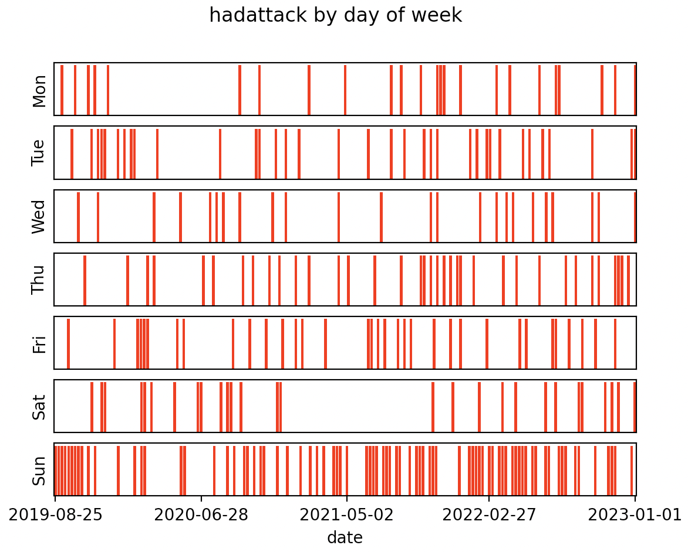

My Health Condition
I have a health problem characterized by pain in my forehead every hour of every day. I also get migraine attacks a few times a week. The migraine attacks started gradually around 2018, and the persistent head pain started more recently. Here are some treatments I have tried: magnesium, sumatriptan, amitriptyline, riboflavin, coenzyme Q10, Nurtec (rimegepant), propranolol, Emgality (galcanezumab), topiramate. I am currently (2021-09-06) writing down my health experiences in a Google sheet, including almost everything I eat, multiple numbers describing my condition, lots of text, and all medication I take. I have written python programs that analyze this data.
Here are some findings:
Attack Frequency by Day of Week
I have been much more likely to have migraine attacks on Sundays than other days of the week. The strength of this has varied from semester to semester. Here I present my findings by 4-month periods:- 2019-09-01 to 2019-12-31: p=0.002; I was more likely to have attacks on Sundays during this period.
- 2020-01-01 to 2020-04-30: p=0.5; I was not more likely to have attacks on Sundays during this period.
- 2020-05-01 to 2020-08-31: p=0.5; I was not more likely to have attacks on Sundays during this period.
- 2020-09-01 to 2020-12-31: p=0.02; I was more likely to have attacks on Sundays during this period, but not as much as during some of the other periods.
- 2021-01-01 to 2021-04-30: p=0.005; I was more likely to have attacks on Sundays during this period.
- 2021-05-01 to 2021-08-31: p=0.0001; I was more likely to have attacks on Sundays during this period.
- 2021-09-01 to 2021-12-31: p=0.08; I was not significantly more likely to have attacks on Sundays during this period.

I do not know what causes these trends.
Propranolol
Propranolol is one of the many medications I have been prescribed. As a nonselective beta blocker, propranolol's primary action is reducing pulse [1][2]. To measure my pulse, I have been using a mobile app called StressCam. This app is old, so its website, stress-cam.com, has been taken down. It only works on my older iPhone and not my newer one.The following image shows that propranolol lowered my pulse. The dosage of propranolol varied.

Propranolol did not correlate significantly with any metric of my headache condition. So I know it affected me, but it did not benefit me. So I am unlikely to try it any more.
Amitriptyline
Amitriptyline is the most harmful medication I have tried. Amitriptyline was the first treatment prescribed my first neurologist. I was prescribed 25mg amitriptyline per day, to be taken in the evening. I tried amitriptyline in early 2020 (before covid).
The physical effects from starting and continuing amitriptyline were weak. The clearest effect was dry mouth. But there were harmful mental effects that started while I was still taking amitriptyline regularly, which I describe below. Withdrawing from amitriptyline was the most severe medication-induced experience I have ever had. I withdrew from amitriptyline after taking it on 18 consecutive evenings. On the first night of reduced amitriptyline levels, I had severe sweating, making my pillow very, very wet. On the second night, I was completely unable to sleep; I did not sleep a single minute. I had extreme nausea for the first 4 days of reduced amitriptyline levels. After I took a few bites of a slice of pizza, I spent the next 15 minutes gasping for air. I found applesauce to be the most effective food. I was very weak and spent most of the time laying in my bed. I also felt cold and needed to wear a jacket indoors.
Amitriptyline also had strong effects on my mental state. I became delusional while I was on amitriptyline. I came to believe natural coincidences were signs from super-human intelligence (such as a god or aliens). On day 16 of amitriptyline, I discovered some natural coincidences that I thought proved super-human intelligence, and at that point I decided to withdraw from amitriptyline. From what I wrote during withdrawal, it is clear that I was completely delusional, perceiving significance in trivial personal events including hearing a bird outside and getting a junk text message. Over the months following the withdrawal, I investigated the natural coincidences using computer simulations, which you can find at this link (they all come from astronomy). It took months for all the delusional beliefs to be overturned in my mind, as I had believed there was more than enough significance to prove super-human intelligence. Once I had rejected the significance of all the coincidences, it appeared that it was a delusion caused by amitriptyline. But looking at my written records, I was interested in the possibility of finding signs from super-human intelligence in the weeks before I took amitriptyline, although I did not come to believe that there was proof of super-human intelligence until my 16th day on amitriptyline. So I am not sure to what degree amitriptyline caused these delusions, but it definitely had strong mental effects.
Escitalpram (Lexapro)
I first took escitalopram against my will in a mental hospital in 2019. In summer 2021, I asked my neurologist for escitralopram because I wanted to gain experience with it on my own terms. My neurologist prescribed 10mg per day at bedtime.Here is what I know about escitralopram's effects on me:
-
Escitalpram causes insomnia. I thought escitralopram was not affecting me until I looked at the output from one of my python programs called offset_spearman.py. This program uses scipy.stats.spearmanr to get the Spearman correlation coefficient and p-value between numerous pairs of attributes with one attribute shifted by a number of days called the offset. The program tries offset values -1, 0, 1, and 2. I have been recording an integer called sleepdifficulty every day. Between 2021-07-01 and 2021-10-01, the spearman correlation coefficient between escitalopram in the evening and sleepdifficulty on that night was 0.38, with p-value 0.0002.
Technical note: This python program treats the days as non-sequential, but days are sequential. So I must consider the sequentiality of the data as a possible cause of significant p-values (it has been the cause in some analyses I have done). Here is some evidence against sequentiality being the cause here:- With this date range, sleepdifficulty does not correlate with itself with offset=1 (from one day to the next).
- None of the other day offsets had a significant p-value.
- Escitalpram causes nausea. For this, I searched my records for the words "nausea" and "vomit" (I often wrote that I "feel like vomiting"). I created a column of integers based on my text records. Between 2021-07-01 and 2021-10-01, the spearman correlation coefficient between taking escitalopram in the evening and nausea the next day was 0.35, with p-value 0.0006. None of the other day offsets have a significant p-value.

Escitalopram did not correlate significantly with any metric of my headache condition.
Topiramate
In April 2021 I asked my neurologist for topiramate and they prescribed it. After trying topiramate for over 6 months, I finally noticed an effect by withdrawing from 75mg per day. Withdrawal from 75mg per day caused sleep difficulty and strong nausea lasting about a week. Here is the graph showing this:
Topiramate taken after noon is counted on the next day in the above graph, representing when the topiramate is in my blood. The highest level of the topiramate line is 100mg, which occurred on 2021-11-07 and 2021-11-28 as I took 4 25mg topiramate tablets on the evening before each of those 2 dates. All 3 lines were normalized to range from 0 to 1.
That graph shows 2 topiramate withdrawals:
- The first withdrawal was because I got sick with a virus starting 2021-11-08. I stopped taking topiramate, incorrectly thinking this was safer than continuing topiramate. When I had the sleep difficulty and intense nausea, I thought it was an effect of the virus. But now I know these were effects of withdrawing from topiramate. The actual effects of the virus were bilateral headache and fatigue which lasted only 3 days. I know it was a virus because others around me were also sick.
- The second withdrawal was because I forgot to take topiramate on the evening of 2021-12-11. I tried to combat the withdrawal with some topiramate, as you can see in the graph. During this withdrawal there were clear mental effects.
Sumatriptan Succinate
Sumatriptan succinate (SS) was the first prescription medication I tried for my head pain condition. It was prescribed by my general-purpose doctor, before I saw any neurologist. I was prescribed pills of 50mg each. I was instructed to take one as early as possible in a migraine attack, and optionally take a second pill after a few hours. These pills are shaped like rounded triangles, and they come in packs of 9.
I took SS on 2019-09-01, 2019-09-08, 2019-09-29, 2019-10-20, and 2019-11-03. All 5 of those dates are Sundays. Unfortunately, I did not record whether I took 1 or 2 pills on some of these dates. I recorded that I took 2 on 2019-11-03, 1 on 2019-09-08, and 1 on 2019-09-29. And I took a total of 7 pills, so I took 2 pills on one of 2019-09-01 or 2019-10-20, but I don't know which one.
I did not notice any clear effects of SS that lasted hours or days. However, SS probably caused vascular pain in my lower legs which lasted for months. This pain came on whenever I sat down for more than a few minutes. The leg pain increased during fall 2019. I acquired a standing desk because the pain was provoked by sitting. I also wore compression howes a lot during this time. In November 2019 the lower leg pain was causing a comparable amount of pain to my head pain condition, so I stopped taking SS, thinking it was causing the leg pain. The leg pain gradually subsided in the first half of 2020 and is now completely gone. Now (2022) I have not worn compression howes in over a year and I generally prefer to use my sitting desk over my standing desk.
On 2020-01-14 I visited a vein clinic because of this lower leg pain. They did an ultrasound on my legs. The ultrasound found vein backflow in my right leg but not my left leg. This may be related to a cluster of spider veins on my inner right leg, above the knee. But this is not related to the lower leg pain because that was bilateral.
When I told my general-purpose doctor about the leg pain, they acted like there was no way SS could cause this. But when I told my first neurologist, they said the sumatriptan might have effected the smaller blood vessels in my legs. I notice that "problems with blood circulation to your legs and feet (peripheral vascular ischemia)" is mentioned in the prescribing information. From my 2022 perspective, the probability that SS was the cause of the lower leg pain is 95%.
Foods
Every day I record a list of foods I eat. I use a python program to analyze this data. As of 2021-10-02, there are no noteworthy correlations between the troublesomeness of my condition and any of more than 50 foods.
Conclusion
I have a history of believing a treatment works for my migraine headaches but deciding it does not work months later. I followed this pattern with magnesium, sumatriptan, Nurtec, propranolol, and topiramate. Currently, I do not know that any treatments have helped my condition. Now that I have followed this pattern multiple times, I am very skeptical when someone says a treatment helped their chronic condition.Here is another graph:
 Click here to go to the index page of my website
Click here to go to the index page of my website